Welcome to Irene's Portfolio
This space showcases all the projects I have developed as a programmer.
I'll keep progressively incorporating more complex or diverse technologies.
Project 1: Shiverflix
Developed using HTML and responsive CSS to ensure accessibility and a seamless user experience
across all devices.
I also implemented a lightweight integration of Google Maps to display a fictional business
location, and used custom code to animate the logo, in order to experience with divs and add a
dynamic identity to the platform.
This was the first personal project I built.
My goal was to have a space where I could keep track of the movies, series and documentaries I've
watched and recommend them along with the streaming platforms where they're available while keeping
it simple.
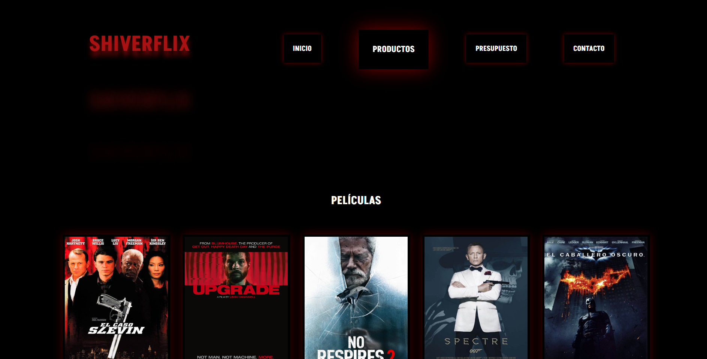
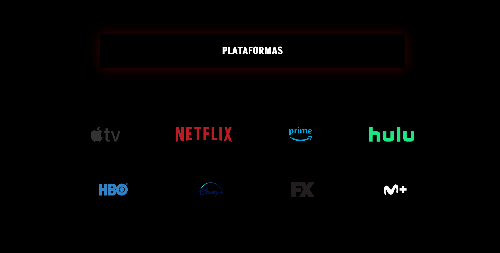
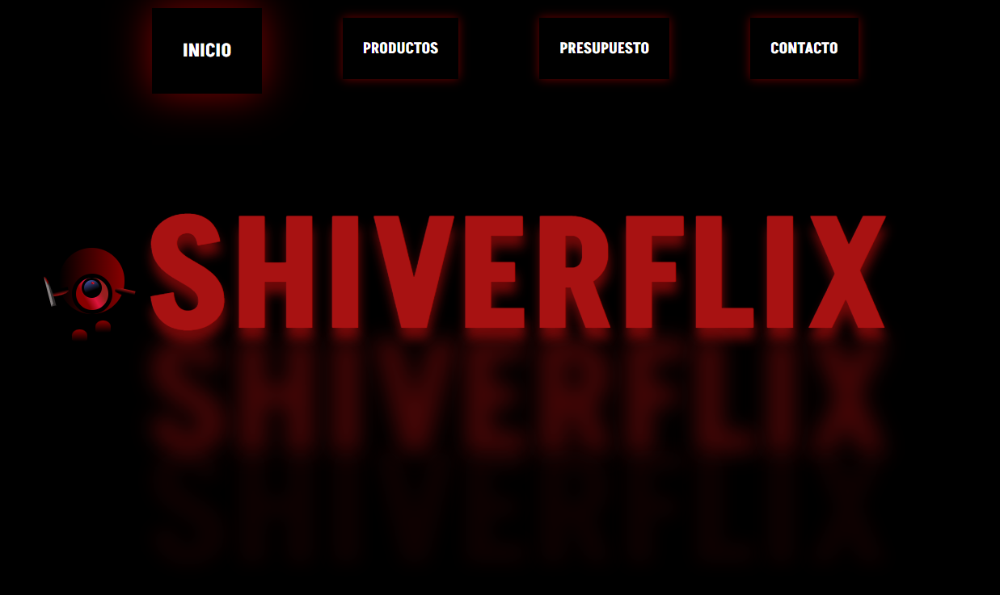
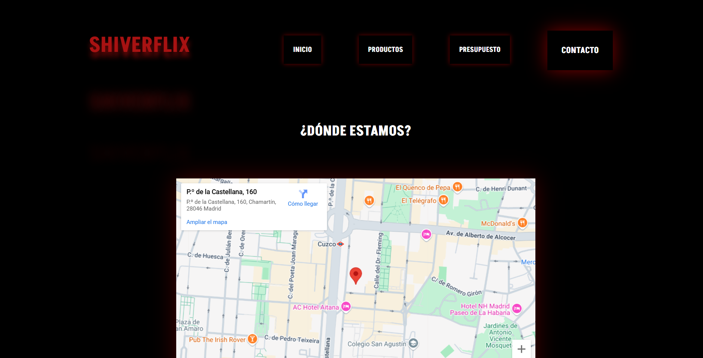
Project 2: Libroasis
Front-end application built with HTML, responsive CSS, and JavaScript.
It includes real-time content updates via AJAX and JSON, as well as an interactive map powered by
Leaflet, showing the fictional location of the bookshop.
I also implemented a custom animated logo
and smooth transitions to give the platform a dynamic and distinctive identity.
A modern fictional bookshop where users can browse and order new reads in a playful and original
way.
The project includes interactive form-based discounts and subtle animations to create a more dynamic
user experience.
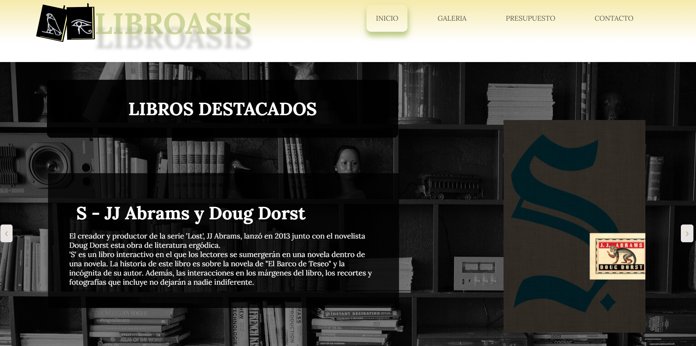
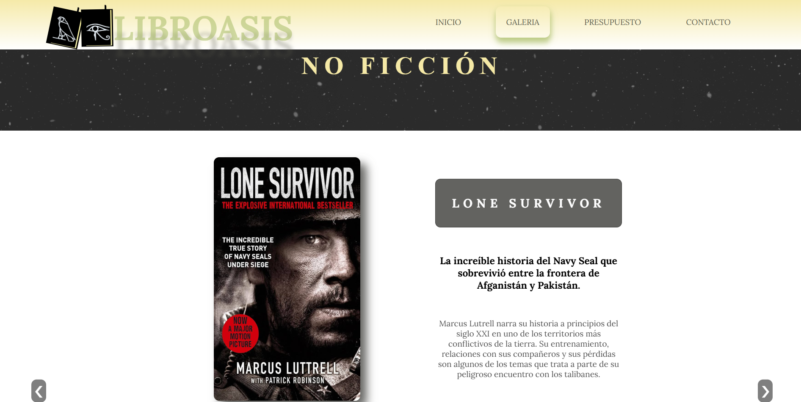
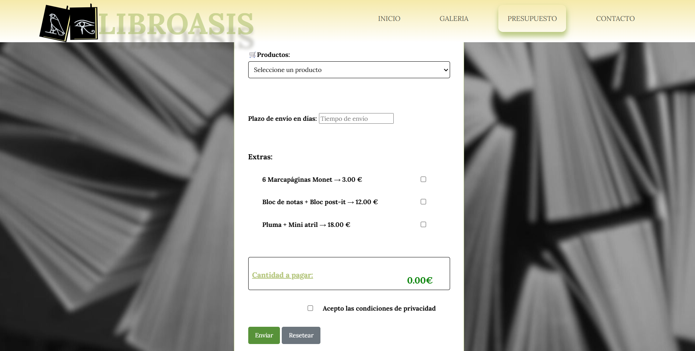
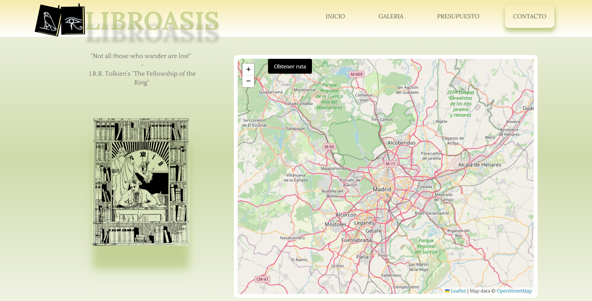
Project 3: Tech Away
Full-stack web application built with PHP and Apache for server-side logic and SQL for database
operations.
The front-end was developed using HTML, CSS and JavaScript for form validation and interface
animations.
Access control was implemented based on user roles, allowing the platform to display different pages
and functionalities depending on whether the user is an admin or a regular user, ensuring both
security and a user-specific interface.
This is my first full-stack project, a collaborative web platform showcasing top techno venues
worldwide.
Users can register, submit news, and book appointments via dynamic forms. Content and access adjust
by user role with admins managing posts and appointments while regular users have limited features.
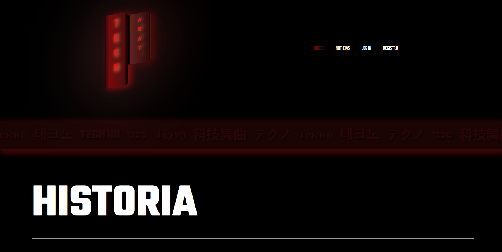
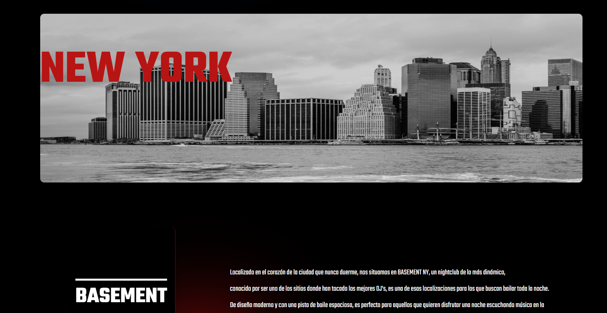
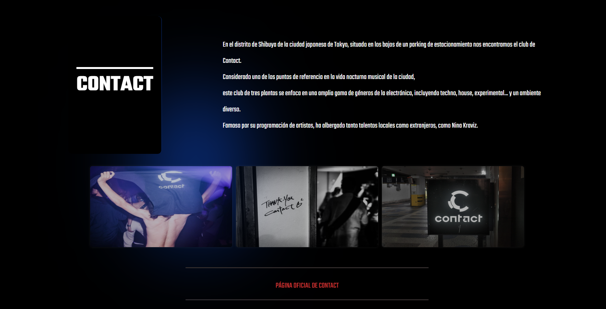
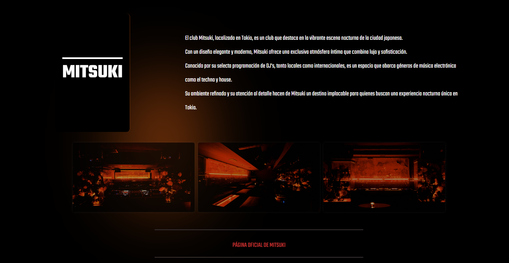
Project 4: ARKitecture
The frontend of this project is crafted with HTML5 and CSS3, enhanced by Bootstrap for
seamless, responsive design across devices.
I added JavaScript to provide interactivity and enable dynamic content management, including
features such as smooth animations.
ARKitecture is a project that showcases iconic and innovative architectural works from around the
globe.
It highlights diverse styles, techniques, and cultural influences, allowing users to explore
inspiring designs from major cities worldwide.
-
 HTML icon by
Icons8
HTML icon by
Icons8
-
 CSS
icon by
Icons8
CSS
icon by
Icons8
-
 JAVASCRIPT
icon by
Icons8
JAVASCRIPT
icon by
Icons8
- BOOTSTRAP icon by Icons8
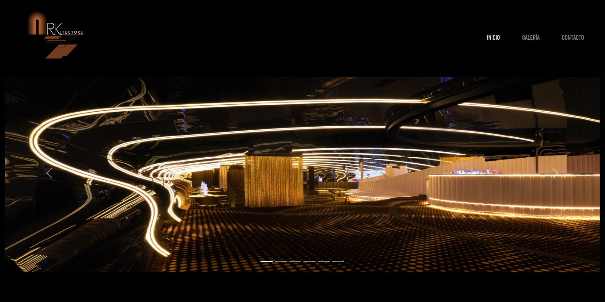
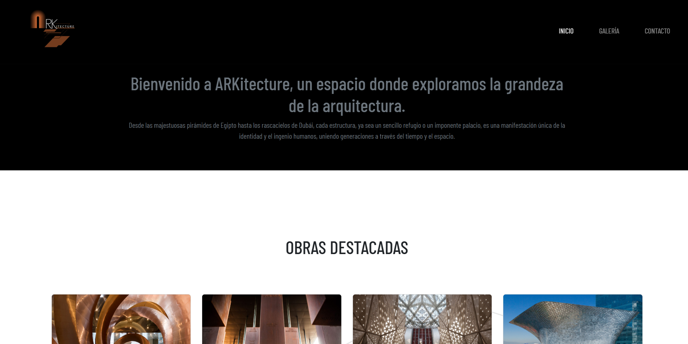
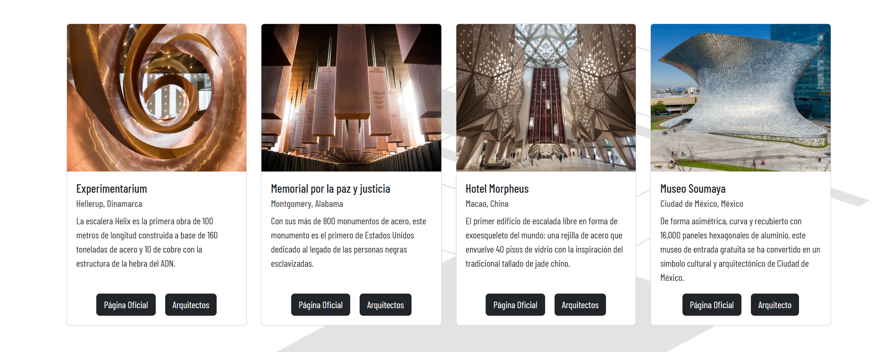
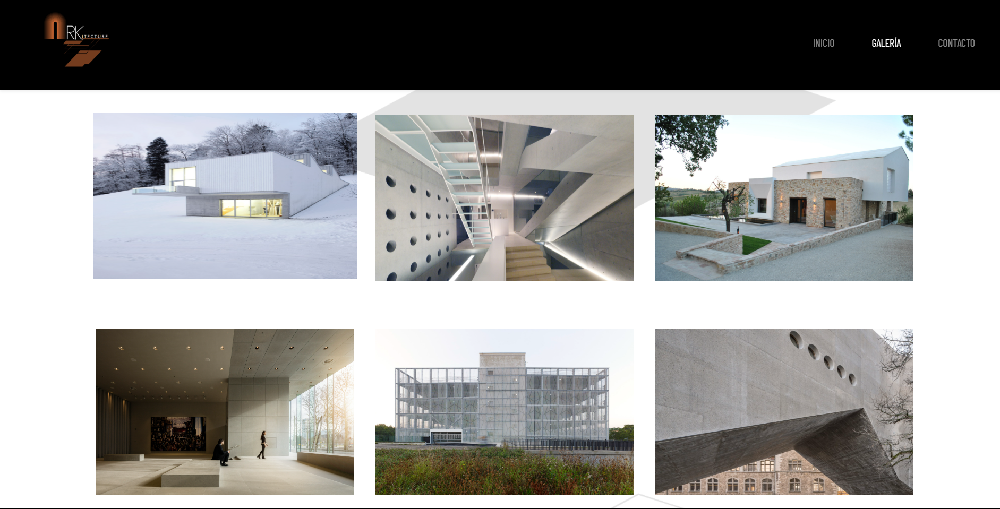
Project 5: Retro Games Prototype
Retro Games is a mobile app prototype developed in Figma using high-fidelity mockups and interactive
components.
Focused on realistic app flows, UI responsiveness, and user interaction design for mobile gaming.
Retro Games is a Figma prototype of a mobile app featuring classic arcade games like Pac-Man and
Street Fighter.
Allows users to play nostalgic retro games on their phones and compete with other players in real
time.
- FIGMA icon by Icons8
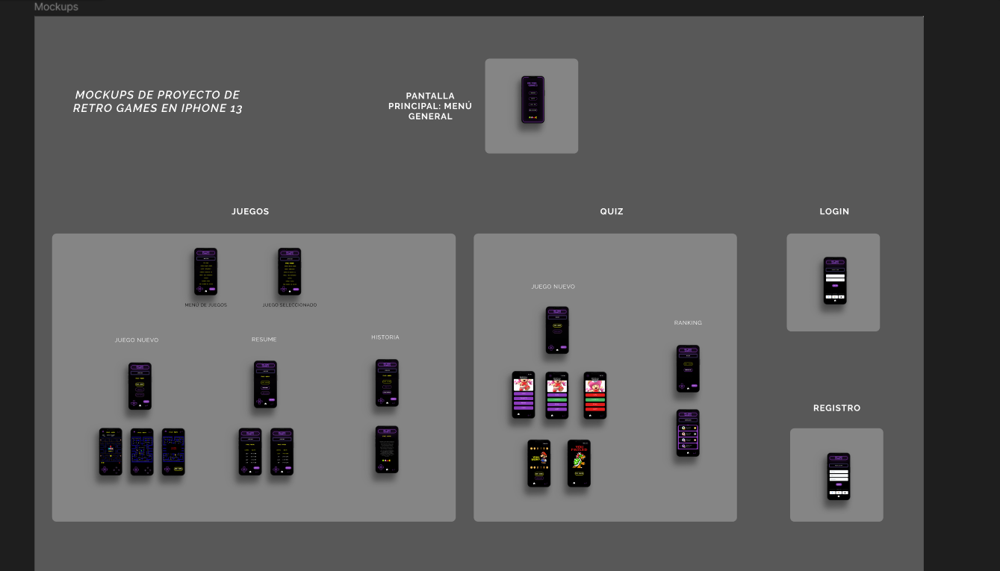
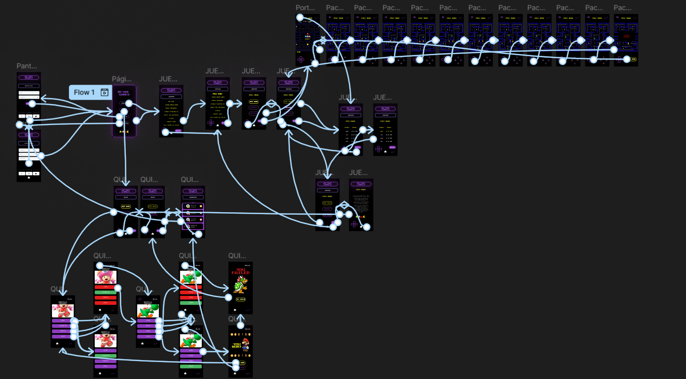
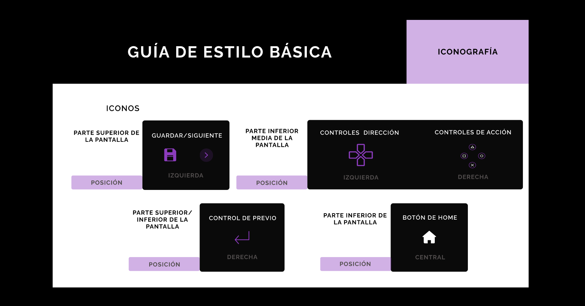
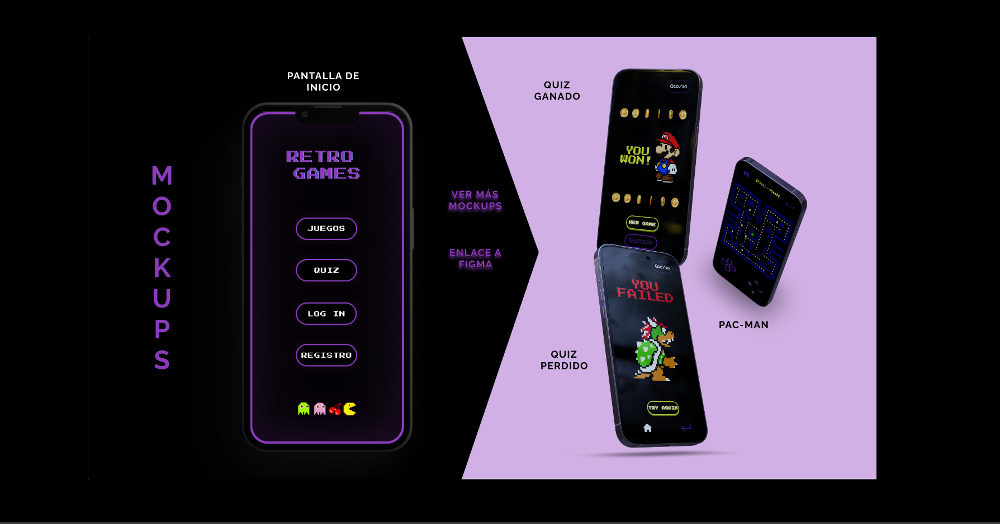